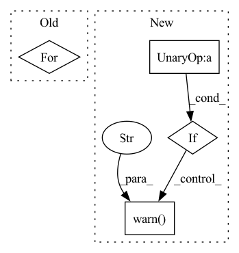

Pattern ID :19972
Before Change
if shuffle is not None:
graph = torch.utils.data.graph.traverse(datapipe, only_datapipe=True)
all_pipes = get_all_graph_pipes(graph)
for pipe in all_pipes:
if isinstance(pipe, Shuffler):
pipe.set_shuffle(shuffle)
After Change
graph = torch.utils.data.graph.traverse(datapipe, only_datapipe=True)
all_pipes = get_all_graph_pipes(graph)
shufflers = {pipe for pipe in all_pipes if isinstance(pipe, Shuffler)}
if not shufflers and shuffle:
warnings.warn(
"`shuffle=True` was set, but the datapipe does not contain a `Shuffler`. Adding one at the end. "
"Be aware that the default buffer size might not be sufficient for your task."
)
datapipe = datapipe.shuffle()
shufflers = {datapipe}
for shuffler in shufflers:In pattern: SUPERPATTERN
Frequency: 3
Non-data size: 4
Instances Fragment ID: 65034009
Project Name: pytorch/pytorch
Commit Name: 3c10987692226adb0923bda5b614178c82552aac
Time: 2022-04-05
Author: github.pmeier@posteo.de
File Name: torch/utils/data/graph_settings.py
M Class Name: AnonimousClass
N Class Name: AnonimousClass
M Method Name: apply_shuffle_settings(2)
N Method Name: apply_shuffle_settings(2)
M Parent Class:
N Parent Class:
M File Name: torch/utils/data/graph_settings.py
N File Name: torch/utils/data/graph_settings.py
M Start Line: 32
M End Line: 36
N Start Line: 32
N End Line: 48
Before Change
body = self.body(inputs)
out: List[Tensor] = []
for name, x in body.items():
out.append(x)
return out
After Change
detections = self.box_head(features)
if torch.jit.is_scripting():
if not self._has_warned :
warnings.warn("YOLO always returns a (detections, features) tuple in scripting" )
self._has_warned = True
return (detections, features)
else:
return self.eager_outputs(detections, features) Fragment ID: 65034010
Project Name: zhiqwang/yolov5-rt-stack
Commit Name: 6351078c9c31b3bc74c9c550a35bed355d8ef79f
Time: 2020-10-05
Author: zhiqwang@outlook.com
File Name: models/yolo_wrapped.py
M Class Name: YOLO
N Class Name: YOLO
M Method Name: forward(2)
N Method Name: forward(2)
M Parent Class: nn.Module
N Parent Class: nn.Module
M File Name: models/yolo_wrapped.py
N File Name: models/yolo_wrapped.py
M Start Line: 21
M End Line: 28
N Start Line: 35
N End Line: 47
Before Change
assert env.num_envs == 1, "You must pass only one environment when using this function"
episode_rewards, episode_lengths = [], []
for i in range(n_eval_episodes):
// Avoid double reset, as VecEnv are reset automatically
if not isinstance(env, VecEnv) or i == 0:
obs = env.reset()
done, state = False, None
episode_reward = 0.0After Change
else:
is_monitor_wrapped = is_wrapped(env, Monitor)
if not is_monitor_wrapped and warn:
warnings.warn(
"Evaluation environment is not wrapped with a ``Monitor`` wrapper. "
"This may result in reporting modified episode lengths and rewards, if other wrappers happen to modify these. "
"Consider wrapping environment first with ``Monitor`` wrapper." ,
UserWarning,
)
episode_rewards, episode_lengths = [], []
not_reseted = True
while len(episode_rewards) < n_eval_episodes: Fragment ID: 65034012
Project Name: dlr-rm/stable-baselines3
Commit Name: 18d10dbf42dd6dff6d457b45b521fdf2a1169a7e
Time: 2020-11-16
Author: kaneran21@hotmail.com
File Name: stable_baselines3/common/evaluation.py
M Class Name: AnonimousClass
N Class Name: AnonimousClass
M Method Name: evaluate_policy(9)
N Method Name: evaluate_policy(8)
M Parent Class:
N Parent Class:
M File Name: stable_baselines3/common/evaluation.py
N File Name: stable_baselines3/common/evaluation.py
M Start Line: 43
M End Line: 61
N Start Line: 20
N End Line: 108